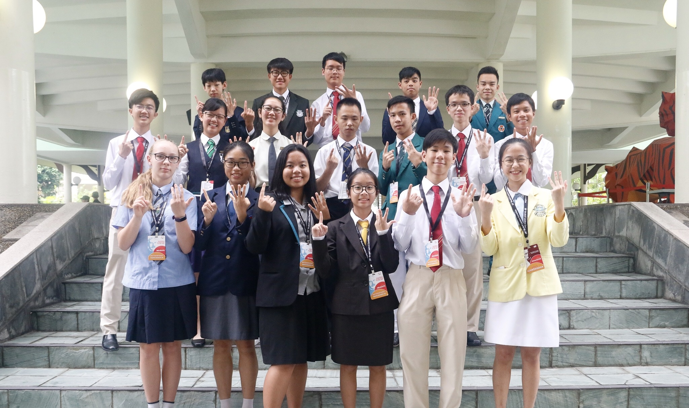

Youth Faculty 19: Technology as an Enabler
Under Youth Assembly 1: Social Integration
Hello! We are YF19, and our topic is: Technology as an Enabler. This refers to technology acting as a catalyst to students achieving their learning outcomes and teachers being able to teach in new and innovative ways . Technology can be utilised by educators to change the landscape of education significantly. Thus, it is vital for youth and educators to progress alongside technology and tap into its benefits to enable students, especially, as they are our target audience, to have a better education.
Some of the problems we identified in the benefits that technology brings about are as follows:
Firstly, having such a wide pool of resources also comes with its problems, especially in schools. When there is so much content, it is extremely hard to narrow down on a specific area or topic. Oftentimes, all the information comes together and is not grouped and becomes less personalised or related to the syllabus. It may thus take several hours just to find what one is looking for, as it is hard to sieve through all the information.
Secondly, in some developing countries, the students' access to the internet is relatively limited, hence they do not have opportunities for collaboration/communitcation between students themselves as well as with their teachers. This serves as a great hindrance and becomes a lot more inconvenient.
Thirdly, you may refer to the poster below for more details about the third problem and corresponding solution that we identified: here
Some of the solutions that we have to the above problems that we identified are as follows:
For the first problem, within our capacity as student leaders, we can help to source and sieve out the information relevant to our curriculum. We can then type and reference these information onto a docs and share it with students of the school. We would also provide hints and ideas that can ease the breakdown of the topic, so they would not feel stressed, but would rather feel happy as they would not need to spend so much time trying to understand the topic. Releasing such information won’t do good other than helping them ace their exams, but would rather bring out the lazy attitude in them. They might become over-reliant on these notes and not bother to participate in the learning process. Thus, we must couple this strategy with educating them to have the right study mindset, and let them understand that this notes sharing platform is not a means to an end, but rather a stepping stone to elevate oneself.
Secondly, the governments of developing countries can help to improve internet connections in rural areas, which provides access to resources and learning materials for students living far away from the cities. Though this requires funding and money, it is a great investment. Alternatively, students in schools in developed countries could undergo a programme or project work that requires them to design a simplified model of electronic devices that do not have as complex capabilities of electronic devices that are currently available in developed regions, but ones that are at least still able to allow collaboration and communication to happen in less developed regions. After such a module, student leaders can then pitch some of the selected models to investors who are able to make the prototypes into actual devices for use in less-developed regions.
Thirdly, you may refer to the poster below for more details about the third problem and corresponding solution that we identified: here
The Lens
Our Lens video is shown in the form of a skit to allow our information to be clearer represented for audience's understanding. Our content includes the Causes and Impacts that technology might bring as an enabler. In addition, we also included some of the loopholes with the benefits, also known as the Problems.
Exhibition
Our exhibition showcased everything we had been preparing for, including each of the 3 sets of Causes, Impacts, Problems and Solutions that we identified through our research. The Lens greatly helped with our exhibition process as we were able to identify what we were lacking in, mainly our organisation and Strategies, which allowed us to represent our content in a clearer way and deepen our content upon review of our performance during The Lens presentation.
(here we would include your exhibition boards, hopefully you left it in ops room)
Thank You
thank you from yf19 to the OT, facils, and everyone for the wonderful 3-4 days spent together, for making SLC the best experience it could have been, and for allowing us to create many memories that will remain in our hearts. As albert einstein said, “life is like riding a bicycle. to keep your balance you must keep moving."